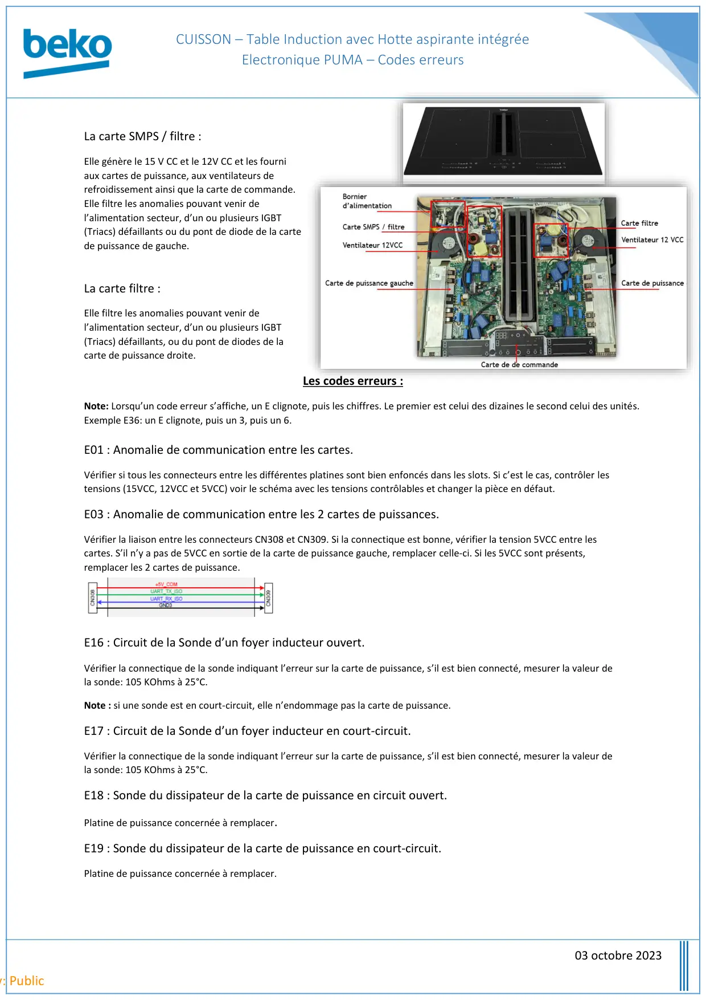
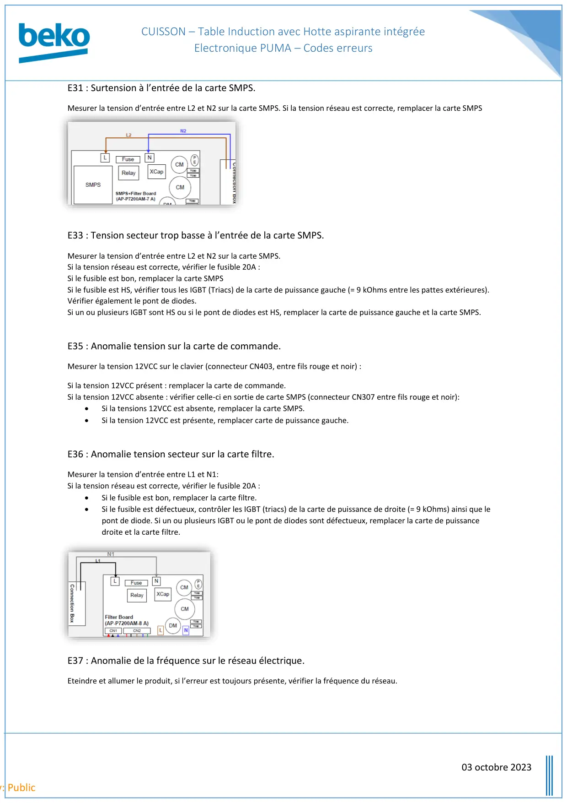
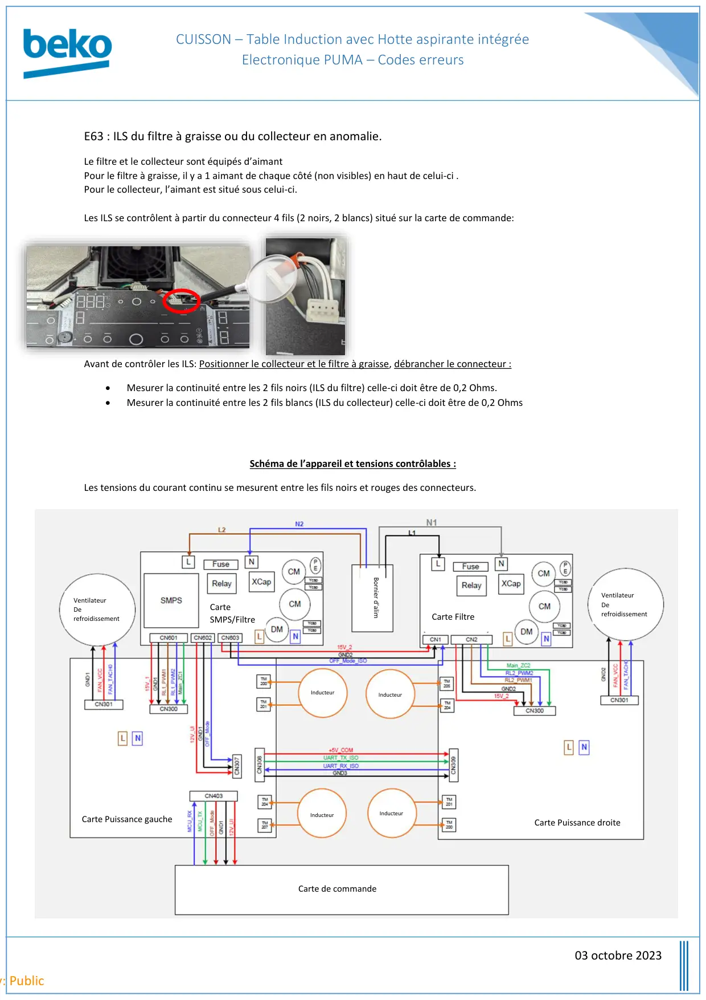
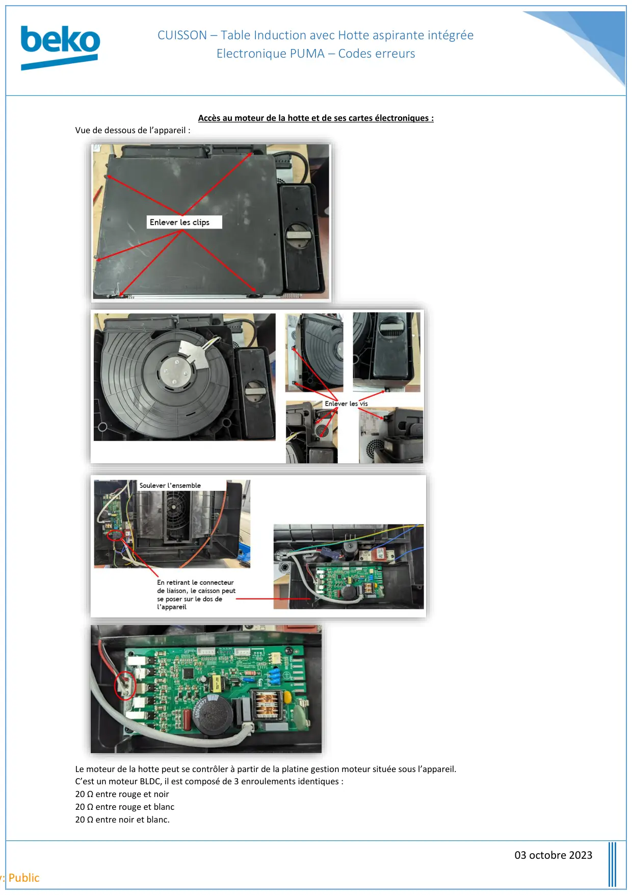

Codes Erreurs Induction Hotte Intégrée Electronique Puma

CUISSON – Table Induction avec Hotte aspirante intégréeElectronique PUMA – Codes erreurs03 octobre 2023y: PublicLa carte SMPS / filtre :Elle génère le 15 V CC et le 12V CC et les fourniaux cartes de puissance, aux ventilateurs derefroidissement ainsi que la carte de commande.Elle filtre les anomalies pouvant venir del’alimentation secteur, d’un ou plusieurs IGBT(Triacs) défaillants ou du pont de diode de la cartede puissance de gauche.La carte filtre :Elle filtre les anomalies pouvant venir del’alimentation secteur, d’un ou plusieurs IGBT(Triacs) défaillants, ou du pont de diodes de lacarte de puissance droite.Les codes erreurs :Note: Lorsqu’un code erreur s’affiche, un E clignote, puis les chiffres. Le premier est celui des dizaines le second celui des unités.Exemple E36: un E clignote, puis un 3, puis un 6.E01 : Anomalie de communication entre les cartes.Vérifier si tous les connecteurs entre les différentes platines sont bien enfoncés dans les slots. Si c’est le cas, contrôler lestensions (15VCC, 12VCC et 5VCC) voir le schéma avec les tensions contrôlables et changer la pièce en défaut.E03 : Anomalie de communication entre les 2 cartes de puissances.Vérifier la liaison entre les connecteurs CN308 et CN309. Si la connectique est bonne, vérifier la tension 5VCC entre lescartes. S’il n’y a pas de 5VCC en sortie de la carte de puissance gauche, remplacer celle-ci. Si les 5VCC sont présents,remplacer les 2 cartes de puissance.E16 : Circuit de la Sonde d’un foyer inducteur ouvert.Vérifier la connectique de la sonde indiquant l’erreur sur la carte de puissance, s’il est bien connecté, mesurer la valeur dela sonde: 105 KOhms à 25°C.Note : si une sonde est en court-circuit, elle n’endommage pas la carte de puissance.E17 : Circuit de la Sonde d’un foyer inducteur en court-circuit.Vérifier la connectique de la sonde indiquant l’erreur sur la carte de puissance, s’il est bien connecté, mesurer la valeur dela sonde: 105 KOhms à 25°C.E18 : Sonde du dissipateur de la carte de puissance en circuit ouvert.Platine de puissance concernée à remplacer.E19 : Sonde du dissipateur de la carte de puissance en court-circuit.Platine de puissance concernée à remplacer.
1 / 4
CUISSON – Table Induction avec Hotte aspirante intégréeElectronique PUMA – Codes erreurs03 octobre 2023y: PublicE31 : Surtension à l’entrée de la carte SMPS.Mesurer la tension d’entrée entre L2 et N2 sur la carte SMPS. Si la tension réseau est correcte, remplacer la carte SMPSE33 : Tension secteur trop basse à l’entrée de la carte SMPS.Mesurer la tension d’entrée entre L2 et N2 sur la carte SMPS.Si la tension réseau est correcte, vérifier le fusible 20A :Si le fusible est bon, remplacer la carte SMPSSi le fusible est HS, vérifier tous les IGBT (Triacs) de la carte de puissance gauche (= 9 kOhms entre les pattes extérieures).Vérifier également le pont de diodes.Si un ou plusieurs IGBT sont HS ou si le pont de diodes est HS, remplacer la carte de puissance gauche et la carte SMPS.E35 : Anomalie tension sur la carte de commande.Mesurer la tension 12VCC sur le clavier (connecteur CN403, entre fils rouge et noir) :Si la tension 12VCC présent : remplacer la carte de commande.Si la tension 12VCC absente : vérifier celle-ci en sortie de carte SMPS (connecteur CN307 entre fils rouge et noir):•Si la tensions 12VCC est absente, remplacer la carte SMPS.•Si la tension 12VCC est présente, remplacer carte de puissance gauche.E36 : Anomalie tension secteur sur la carte filtre.Mesurer la tension d’entrée entre L1 et N1:Si la tension réseau est correcte, vérifier le fusible 20A :•Si le fusible est bon, remplacer la carte filtre.•Si le fusible est défectueux, contrôler les IGBT (triacs) de la carte de puissance de droite (= 9 kOhms) ainsi que lepont de diode. Si un ou plusieurs IGBT ou le pont de diodes sont défectueux, remplacer la carte de puissancedroite et la carte filtre.E37 : Anomalie de la fréquence sur le réseau électrique.Eteindre et allumer le produit, si l’erreur est toujours présente, vérifier la fréquence du réseau.
2 / 4
CUISSON – Table Induction avec Hotte aspirante intégréeElectronique PUMA – Codes erreurs03 octobre 2023y: PublicE63 : ILS du filtre à graisse ou du collecteur en anomalie.Le filtre et le collecteur sont équipés d’aimantPour le filtre à graisse, il y a 1 aimant de chaque côté (non visibles) en haut de celui-ci .Pour le collecteur, l’aimant est situé sous celui-ci.Les ILS se contrôlent à partir du connecteur 4 fils (2 noirs, 2 blancs) situé sur la carte de commande:Avant de contrôler les ILS: Positionner le collecteur et le filtre à graisse, débrancher le connecteur :•Mesurer la continuité entre les 2 fils noirs (ILS du filtre) celle-ci doit être de 0,2 Ohms.•Mesurer la continuité entre les 2 fils blancs (ILS du collecteur) celle-ci doit être de 0,2 OhmsSchéma de l’appareil et tensions contrôlables :Les tensions du courant continu se mesurent entre les fils noirs et rouges des connecteurs.CarteSMPS/FiltreCarte FiltreCarte Puissance droiteCarte Puissance gaucheVentilateurDerefroidissementVentilateurDerefroidissementCarte de commandeInducteurInducteurInducteurInducteur
3 / 4
CUISSON – Table Induction avec Hotte aspirante intégréeElectronique PUMA – Codes erreurs03 octobre 2023y: PublicAccès au moteur de la hotte et de ses cartes électroniques :Vue de dessous de l’appareil :Le moteur de la hotte peut se contrôler à partir de la platine gestion moteur située sous l’appareil.C’est un moteur BLDC, il est composé de 3 enroulements identiques :20 Ω entre rouge et noir20 Ω entre rouge et blanc20 Ω entre noir et blanc.
4 / 4